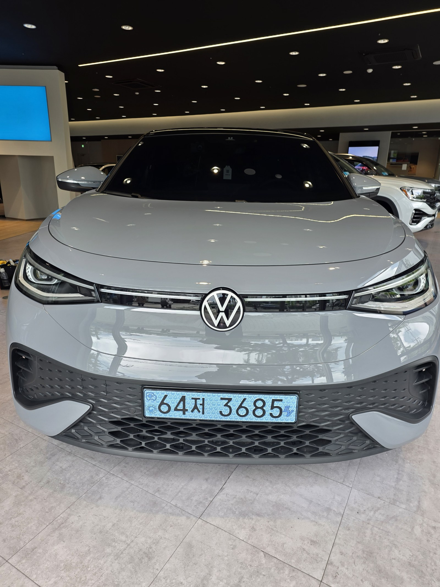
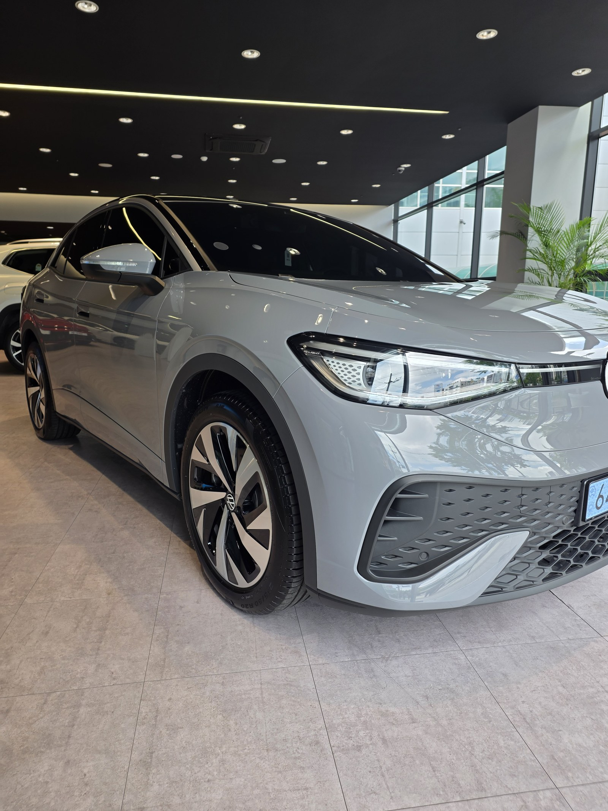
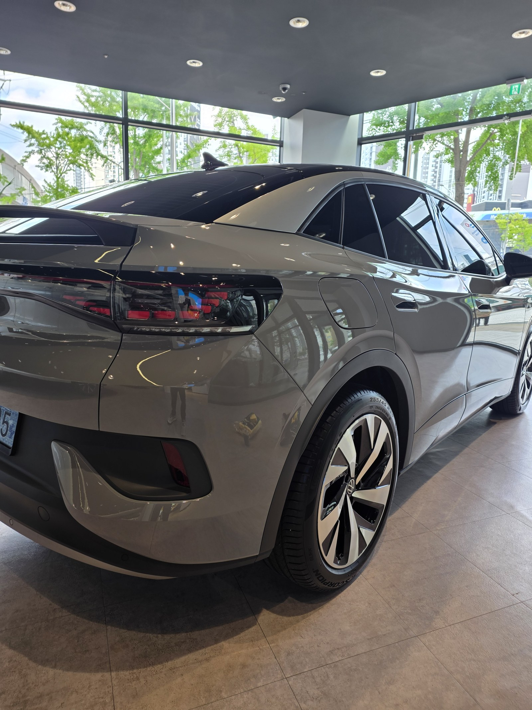
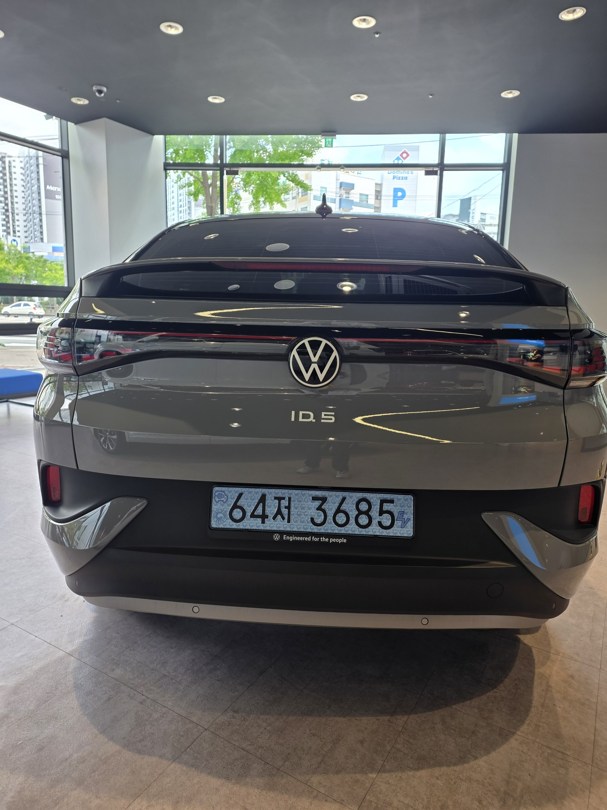
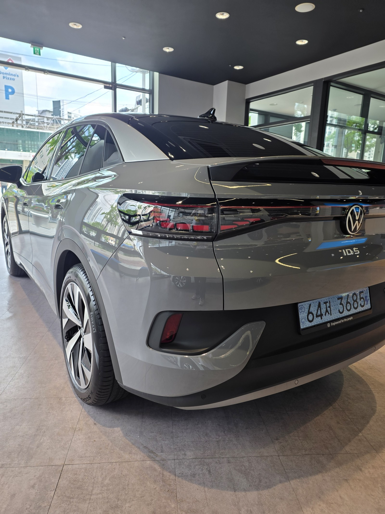
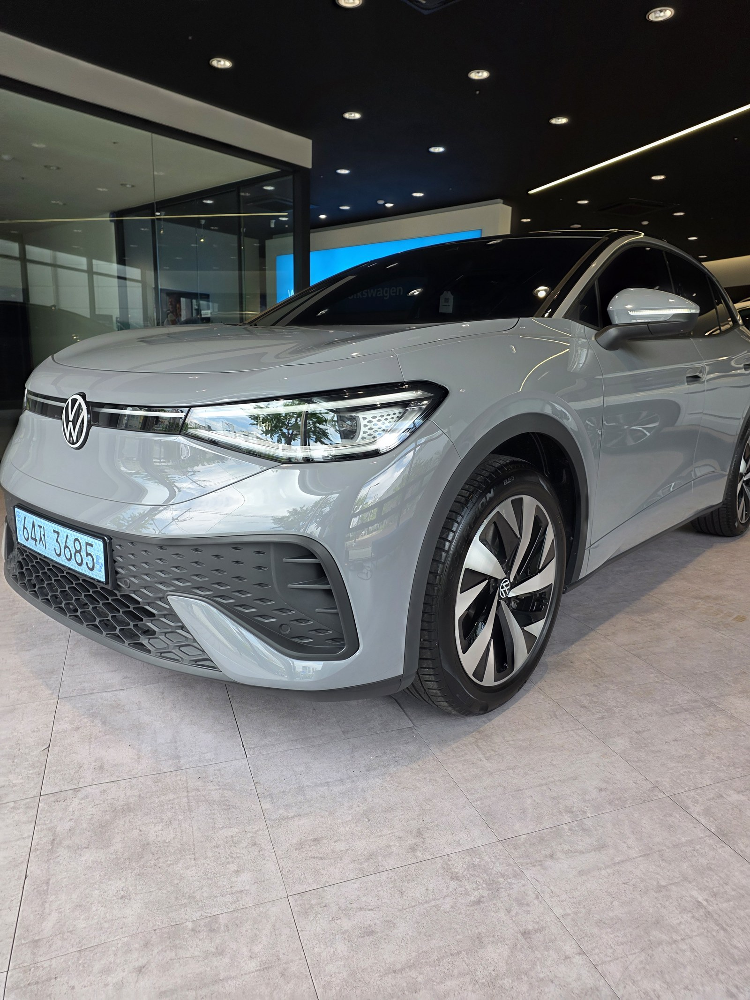
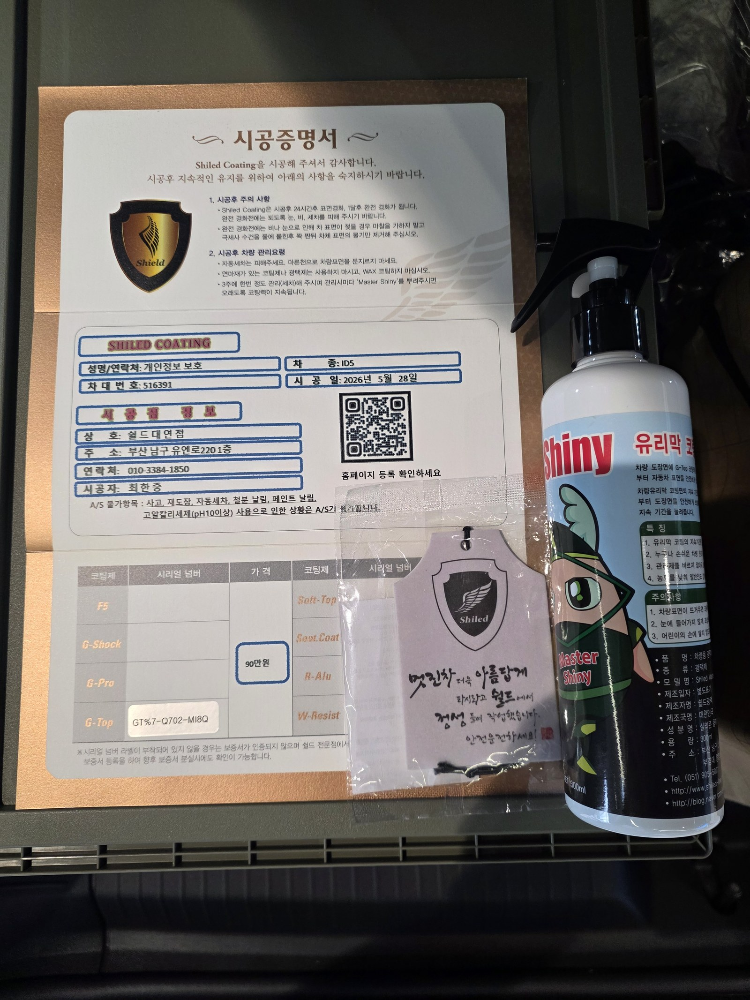

폭스바겐 ID.5 그레이 전기차입니다. 아직 출고 전, 새 차입니다.
부산 신차 유리막코팅으로 G-TOP을 올렸습니다.

전기차도 신차 유리막코팅이 필요한가
충전 습관 때문에 오염 노출이 더 잦습니다.
전기차는 야외 충전소를 이용하는 빈도가 높아 빗물과 먼지, 이물질에 노출되는 시간이 내연기관차보다 깁니다. 출고 직후 도장면이 가장 깨끗할 때 코팅막을 입혀두면 이후 관리가 한결 수월해집니다. 부산 신차 유리막코팅 문의 중에서도 전기차 차주의 문의가 꾸준히 늘고 있습니다.

그레이 ID.5에 왜 G-TOP인가
G-TOP은 발수성과 방오성을 강화하는 코팅입니다.
전기차 차주는 잦은 세차보다 관리 부담을 줄이는 쪽을 선호하는 경우가 많습니다. G-TOP을 올리면 물방울이 맺혀 구슬처럼 흘러내리고, 오염 물질이 도장면에 잘 붙지 않습니다. 코팅제는 대표가 화학공학 전공으로 직접 개발·제조한 제품입니다.

기술자의 팁
신차라고 바로 코팅을 올리지 않습니다. 운송·전시 과정에서 묻은 미세 오염을 디테일링 세차와 탈지로 걷어낸 뒤에 올립니다. 깨끗한 바탕 위에 올려야 코팅이 제대로 밀착합니다.


번호판 자리까지 고르게
범퍼 하단과 번호판 주변은 세차 시 스펀지가 잘 닿지 않는 자리입니다.
그만큼 오염이 먼저 쌓이는 부위이기도 합니다. 이런 자리까지 코팅제가 고르게 퍼지도록 손으로 직접 도포해, 전체 도장면의 발수 성능을 균일하게 맞췄습니다.

시공증명서를 함께 드립니다
모든 시공 차량에 시공증명서를 드립니다.
차종·시공일·코팅제 시리얼 번호가 적혀 있고, 홈페이지에 등록해 보증을 받으실 수 있습니다. 이 차는 G-TOP 코팅으로 기록돼 있습니다.

차종·시공일·코팅제 시리얼이 기재된 시공증명서
자주 묻는 질문
Q. 전기차도 신차 유리막코팅이 필요한가요?
A. 필요합니다. 전기차는 충전 특성상 야외 충전소를 이용하는 빈도가 높아 빗물, 먼지, 이물질 노출이 잦습니다. 출고 직후 도장면이 가장 깨끗할 때 코팅막을 입혀두면 이후 관리가 훨씬 수월해집니다.
Q. 그레이 ID.5에는 왜 G-TOP을 올렸나요?
A. G-TOP은 발수성과 방오성을 강화하는 코팅입니다. 전기차는 세차 빈도를 줄이고 싶어하는 차주가 많아, 물방울이 맺혀 그대로 흘러내리는 발수력과 오염이 잘 붙지 않는 방오성이 특히 유리합니다.
Q. 유리막코팅과 광택은 뭐가 다른가요?
A. 광택은 도장면 표면의 스월·잔기스를 연마해 평탄하게 만드는 작업이고, 유리막코팅은 그 위에 유리질 보호막을 입혀 오염과 자외선으로부터 도장면을 지키는 작업입니다. 신차는 보통 광택 없이 코팅만으로도 충분합니다.
Q. 신차코팅도 전처리를 하나요?
A. 합니다. 신차라도 운송과 전시 과정에서 미세 오염이 묻습니다. 디테일링 세차와 탈지로 표면을 정리한 뒤 코팅을 올려야 코팅막이 도장면에 제대로 밀착합니다.
Q. 쉴드광택 위치와 예약은 어떻게 하나요?
A. 부산 남구 유엔로220 1F 쉴드광택입니다. 예약·상담은 010-3384-1850, 대표 최한중이 직접 상담하고 책임 시공합니다.
새 차일수록 시작점이 다릅니다. 가장 깨끗할 때 입혀두십시오.
제품을 직접 만드는 사람이 직접 시공합니다.
부산에서 신차 유리막코팅을 고민 중이시면 편하게 연락 주십시오.
어떤 차를 타냐보다 어떻게 타냐가 중요합니다~!
📞 010-3384-1850 견적 문의쉴드광택 · 부산 남구 유엔로220 1F · 대표 최한중